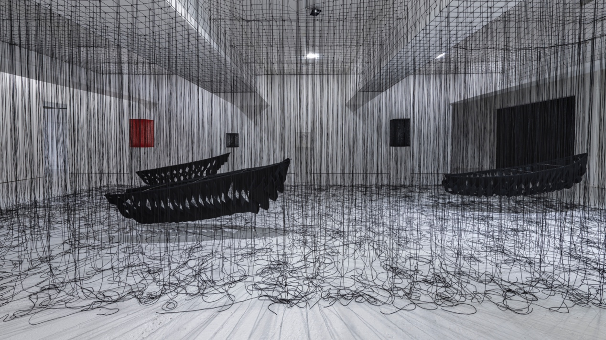
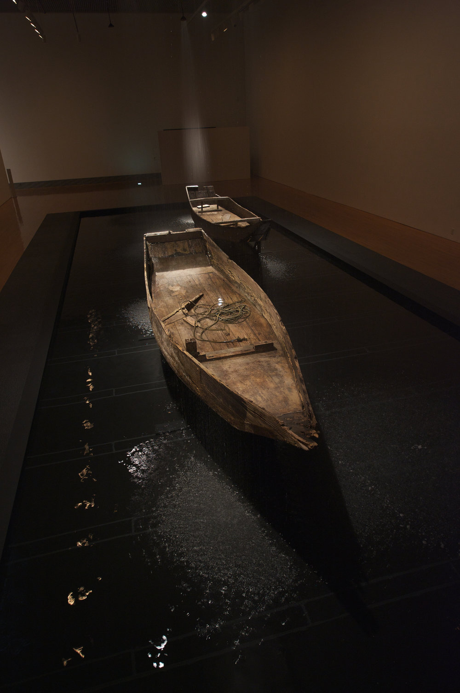
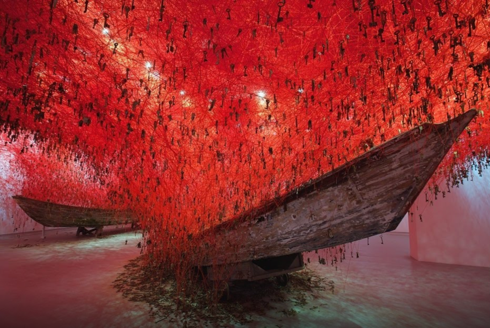
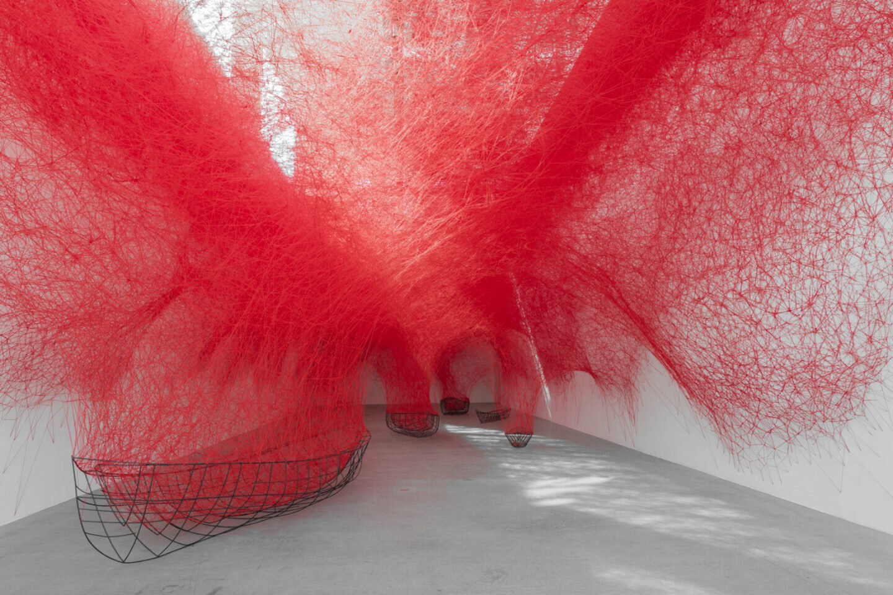
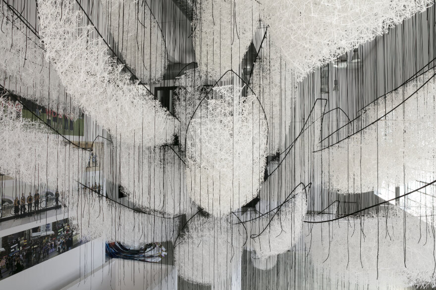

Chiharu Shiota's exhibition was on display at KÖNIG LONDON from October 9 to December 19, 2020. Unfortunately, I missed her exhibition in London, so I had to view the photos on her personal website. Her work appeals to me because I personally find her work visually striking, and I really admire her ability to clearly express her imagination of dreams and the void of space through lines. In her artworks or as an important theme of her philosophy, everything is connected by lines and lines make up different spaces that are infinite just like the universe.

Figure 1 CHIHARU SHIOTA | NAVIGATING THE UNKNOWN (2020). Available at: https://showrooms.artbutler.com/afe348f1/# (Accessed: 1 January 2021).
The most intriguing element of this exhibition is her work Navigating The Unknown (2021). It’s a work consisting of three black boats and many long black lines hanging from the top (see Figure 1). I would like to trace back to Shiota’s former artworks to see how her ideas evolve.
Shiota has used the boat element many times, first in her 2012 exhibition Where We Are Going, which mainly present 2 wooden boats that look like being used for many years (see Figure 2) and did doesn’t incorporate her signature ‘lines' element, making it slightly monotonous and uninteresting.

Figure 2 CHIHARU SHIOTA | WHERE WE ARE GOING (2012). Photos by Sunhi Mang

Figure 3 CHIHARU SHIOTA | THE KEY IN THE HAND (2015). Photos by Biennale Arte
The boat element was back to Shiota’s work as an important supporting tool in The Key In The Hand at the 2015 Venice Biennale (see Figure 3). This time she focused on the red lines and keys. She sourced thousands of keys from all over the world and linked them together with red lines. “These keys”, she said, "are not only familiar and valuable objects that protect important spaces in people's lives, but they also inspire us to open doors to the unknown" (Shiota, 2015). For audience who had chance to see this work, I think it would lead them to think about the words “destination” or “answer”. Where are the boats going to? what are the doors those keys will open? Will we, as an independent person living in the world, have enough wisdom to choose the right keys and find the right doors? Or does it matter to find the right answers, or what really matters might only the process of seeking for truth? For whatever explanation that each of us believes, this work has the great power to inspire us to think more about what we truly want.

Figure 4 CHIHARU SHIOTA | UNCERTAIN JOURNEY (2016). Photos by © Clemens Poloczek
In 2016, in her work Uncertain Journey, Shiota combined boats and lines (see Figure 4). The boats are not concrete anymore, and they become more abstract. The hanging lines are organized more irregularly, but very like human blood, and the whole structure looks like a big net or our veins, or even like two human lungs. Shiota said, 'The installation is like one vast network, with the boats carrying us through on a journey of uncertainty and wonder" (Shiota, 2016). This installation seems to be discussing the changing status of relationships between different people or everything in the world (Wittrock, 2016). Shiota once said that she would like to emphasize the feeling of travelling with nowhere. Interestingly, this opinion actually echoes the questions that I raised when seeing her former works. Shiota herself is showing a tendency to choose or a preference for the “process” instead of the “destination”.

Figure 5 CHIHARU SHIOTA | WHERE ARE WE GOING (2017). Photos by © Gabriel de la Chapelle
In the Le Bon marché department store in Paris in 2017, she used white yarn for the first time to create a dreamy feeling (see Figure 5). The work is based on a thin black iron rod, with the white yarn being the main body and the black rod shaped like a boat, and elements such as giant feathers or floating autumn leaves are also used (Meruk, 2017). In an interview, Shiota said that the inspiration came from the uncertainty of people's journey through life. In the information age, we were able to access information faster and easier, but the more information we had the more complicated our life journey became (Shiota, 2017). The obstacles are like these lines, and our bodies struggle to adapt to the challenges raised in an era of fast pace and with overloaded information. Although not knowing where they are going, all the boats are heading in one direction, symbolising there’s still a way to go in the future, no matter it leads to hope or destruction (LVMH, 2017).
For this 2020 exhibition (see Figure 6), she used metal and felt as the frame of the boat, making it a little more abstract. In this work, Shiota raised a question "Where is the surface in this ocean of information?" (Shiota, 2020) She sharply and directly pointed to this era that people are surrounded with too much information and not knowing where to go. She uses the line to present the idea that if death is not the end of life, then it might be possible to construct a new dimension of space which has no beginning and no end. In other words, she argues that time is a cycle and that when we die, we might not really die, but might be reborn in a new dimension. This reminds me of the words of Schopenhauer in The World as Will and Representation "If the whole world as representation is only the visibility of the will, then art is the elucidation of this visibility" (Schopenhauer, 2014). The imagination of the visibility of consciousness exists in our thinking of perceiving and being perceived, in other words, we exist in another form capable of being perceived before we are born, then we are also transformed into another form of perception after we die.
People all over the world have experienced many disasters and many people have died this year. It can be a very sad and bad thing in a realistic sense, but if we use Shiota’s perspective to view this, we can say they may not die, they have just gone to another dimension to start their new life. I don't want to get into a complicated discussion here, but after seeing Shiota’s works, I want to say that no matter what kind of difficulties and challenge that we are facing, the only thing that we can’t stop doing is to keep moving forward, to keep the process of creating something different, even if we don’t know if the direction, we are going to is leading us to hope or destruction.
Reference
1.24s.com. 2017. Meet Chiharu Shiota. [online] Available at: <https://www.24s.com/en-it/le-bon-marche/vu-au-bon-marche/interview-chiharu-shiota> [Accessed 1 January 2021].
2.LVMH. 2017. Artist Chiharu Shiota Weaves Her Web At Le Bon Marché In “Where Are We Going?” Exhibition - LVMH. [online] Available at: <https://www.lvmh.com/news-documents/news/artist-chiharu-shiota-weaves-her-web-at-le-bon-marche-in-where-are-we-going-exhibition/> [Accessed 1 January 2021].
3.Meruk, A., 2017. ״Where Are We Going? ״ Chiaru Shiota / Le Bon Marché. [online] Medium. Available at: <https://medium.com/open-edtech/where-are-we-going-chiaru-shiota-le-bon-march%C3%A9-14a2e52e528a> [Accessed 1 January 2021].
4.Google Arts & Culture. 2015. THE KEY IN THE HAND - Japan - Biennale Arte 2015 - Google Arts & Culture. [online] Available at: <https://artsandculture.google.com/exhibit/the-key-in-the-hand/2wJSFJ9xCfj3Jw> [Accessed 1 January 2021].
5.Wittrock, A., 2016. An 'Uncertain Journey' By Chiharu Shiota - IGNANT. [online] IGNANT. Available at:<https://www.ignant.com/2016/09/27/chiharu-shiota-uncertain-journey/> [Accessed 1 January 2021].
6.Magazine,W.(2016) Tied up: Chiharu Shiota’s ’Uncertain Journey’ entangles Blain|Southern gallery, Berlin, Wallpaper*. Available at: https://www.wallpaper.com/art/chiharu-shiota-uncertain-journey-at-blainsouthern-berlin-casts-web (Accessed: 1 January 2021).
7.RECOMMENDED: CHIHARU SHIOTA "NAVIGATING THE UNKNOWN" | Crossing Cultures (2020). Available at: https://blogs.brighton.ac.uk/crossingcultures/recommended-chiharu-shiota-navigating-the-unknown/ (Accessed: 1 January 2021).
8.CHIHARU SHIOTA: NAVIGATING THE UNKNOWN on artnet (2021). Available at: https://www.artnet.com/galleries/koenig-galerie/chiharu-shiota-navigating-the-unknown (Accessed: 1 January 2021).
9.Schopenhauer, Arthur (2014). The World as Will and Representation, Volume 1. Translated by Norman, Judith; Welchman, Alistair; Janaway, Christopher. Cambridge: Cambridge University Press. p. 52. ISBN 9780521871846.